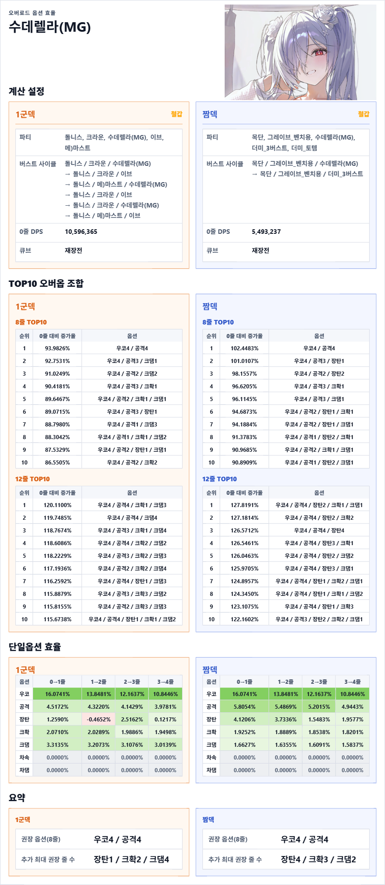
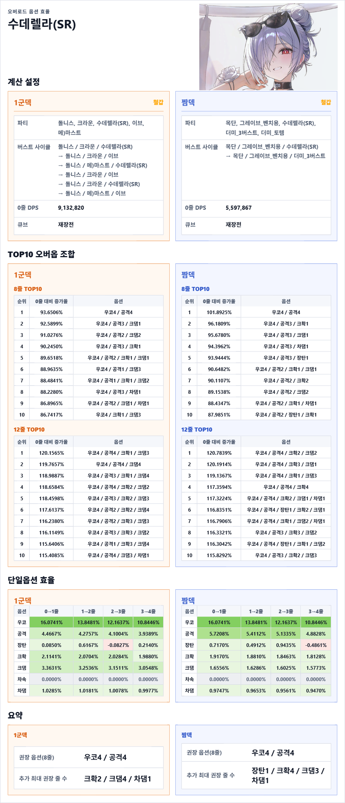
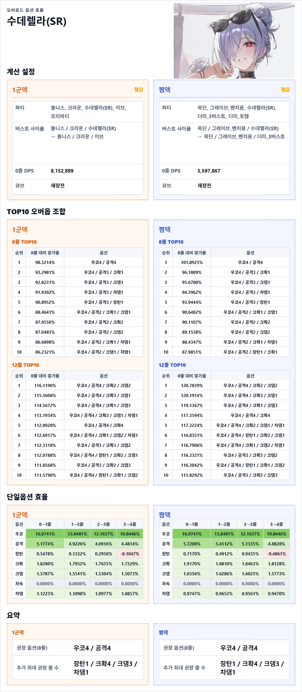
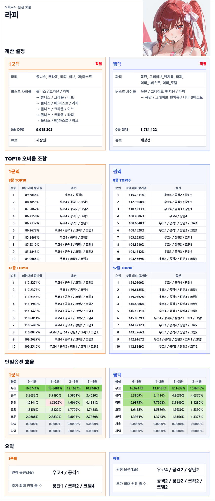
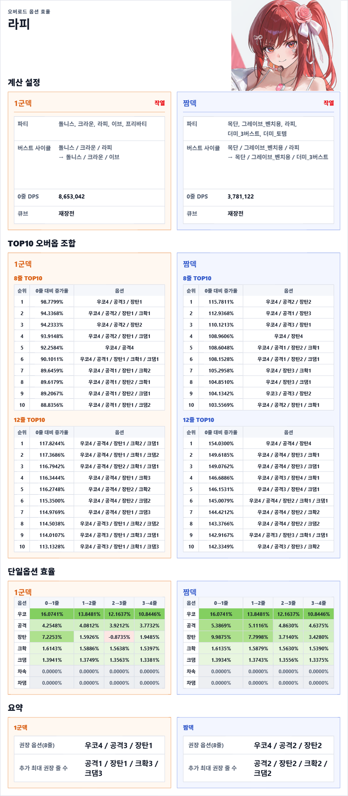

계산 조건
싱크400, 장비5555, 재장큡15, SR15, 풀돌, 호감도 MAX(30 or 40), 코어X, 관통X, 파츠X, 비우코, 스킬 101010
적 방어력 31784 (솔레기준), 콘솔레벨 일반/유형/기업 = 300/150/150, 전탄 명중
파티원 오버옵 : 우코 80%(단, 우코 활성 벤치마크에서만 작동), 공증 20%, 장탄 100%
예외) 프리바티, 헬름 : 장탄 0%
버스트 충전시간 2.4초, 버스트 단계 당 딜레이 0.1초(수동버스트 사용기준)
-> 풀버X 2.7초 + 풀버O 10초가 한 사이클
시뮬레이션 시간 : 180초 (14사이클+a)
체급 계산기와는 약간 조건이 다름
수동버스트에 가까운(그러나 조금 느슨한) 사이클 시간을 사용함
------------------------------------
효율 계산에 사용한 오버옵 1줄당 값(9단계)
우코: 20.75%
공증: 10.40%
장탄: 60.71%
크댐: 14.48%
크확: 5.03%
차댐: 10.40%
차속: 4.33%
돌니스 크라운 수렐루(MG) 이브 마스트

돌니스 크라운 수렐루(MG) 이브 프바
돌니스 크라운 수렐루(SR) 이브 마스트

돌니스 크라운 수렐루(SR) 이브 프바

돌니스 크라운 라피 이브 메스트

돌니스 크라운 라피 이브 프바

오버옵 효율은 니케의 스킬셋, 파티의 버퍼에 따라 제각각이삼
지금 현재 버퍼 기준으로는 A세팅이 최고이지만
추후 다른 버퍼가 출시되면 B세팅이 최고가 될수있삼
적당한 8~12줄로 타협하고 넘어가는것도 좋아보여.
메스트급의 크/크 버프만 있어도 크/크 오버효율이 꽤 많이 올라가는게 의외였삼
민프덱은 크크 오버 더 잘받을 듯
신규 니케의 경우 스킬정보공개 -> 체급계산기 -> 적당한 품질 검수 -> 오버효율계산기 사이클로 업로드 예정
수렐루 오버옵 결론 :
4우4공1장 +a(장크크 점지 받는대로)
+) 장탄 효율 -값으로 나오는 건 시뮬레이션은 재장컨을 안해서
풀버/재장전 아다리 안맞는 경우가 있어서 생김.
++) 재장전 속도 버프가 충분하면 장탄효율이 꽤 떨어짐